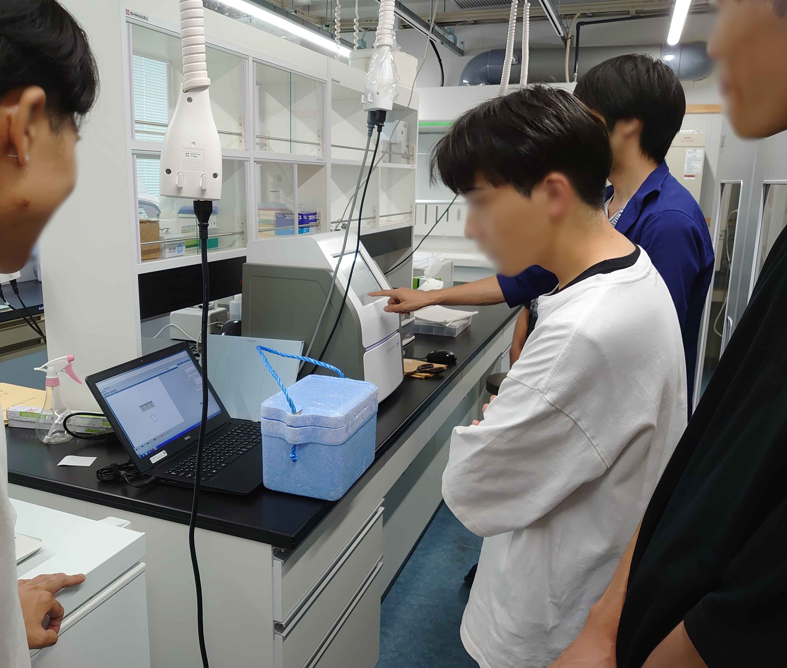

私たちについて
生体内では，細胞間の情報や物質のやり取りがさまざまな生命現象を支えています．このような細胞間コミュニケーションを人工的に再現するために，DNAを用いてGUV（Giant Unilamellar Vesicle）同士を接続する研究が行われています．しかし，これまでの研究には，複数のGUVを接続する場合に意図しない接続や過剰な凝集が生じ，接続する相手や接続数を制御できないという課題がありました．本研究では，DNAによるGUV間の接続とDNA鎖置換反応を組み合わせ，GUVの接続相手と接続数を制御したネットワーク「ALIGN（Accurately Linkable GUV Network）」を提案します．
GUV表面に異なるDNA配列を配置し，相補的なDNA同士の結合によって特定のGUVを選択的に接続します．さらに，鎖置換反応を利用して他のDNAとの結合を阻害することで，一つのGUVが過剰に多くのGUVと接続することを防ぎ，意図した構造を持つGUVネットワークの構築を目指します．
この設計の有効性を検証するため，DNAの結合や解離の過程と鎖置換反応をモデル化し，GUV間の接続挙動をシミュレーションしました．また， DNAの長さや解離度などのパラメータを変化させ，適切な接続と過剰な連結の抑制を両立する条件を探索しています．
また，接続したGUV間で物質交換を実現するため，α-ヘモリシンによってGUV膜に形成した細孔とTRIMEBを用いた物質放出機構を組み合わせます．TRIMEBは，α-ヘモリシン同士が近接した際に物理的に外れる特性を持つため， GUV同士の接続をきっかけに物質交換が開始される機構として使用します．
現在は，DNAによるGUV間の接続と鎖置換反応を組み合わせたモデルの構築・検証を進めるとともに，GUVの作製およびにα-ヘモリシンによる物質輸送機構の実験的検証を進めています．本研究により，接続相手や接続数が制御された人工細胞ネットワークを構築し，複数のGUV間で物質を段階的に移動させる基盤技術の確立を目指します．将来的には，複数の人工細胞が協調して働くネットワークの実現や，複雑な機能を持つ人工細胞システムの構築に貢献できると考えています．
BIOMODは、学生を対象とした年次の生体分子デザイン国際大会です。 学部生チームがDNA、RNA、タンパク質などの「生体分子」を構成要素として利用し、自律型ロボット、分子コンピューター、ナノ医療のプロトタイプなど、独創的な製作を行い競い合います。 学生が主体となってプロジェクトを推進し、毎年秋の最終大会に参加して研究成果を発表し、受賞を目指します。
私たちは生体分子を材料として、目的に応じて働く分子ロボットや分子システムの設計・開発に取り組んでいます。これらの技術は、将来的に病気の早期発見や治療、環境問題の解決など、社会課題の解決につながることが期待されています。